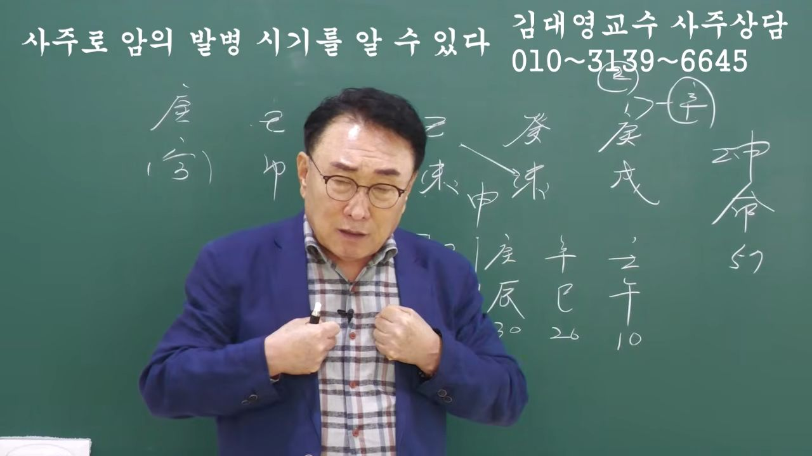

남촌물상TV 전체 문서 › 동영상 V0189
누구나 암에 걸릴 수 있다 사주로 그 시기를 알 수 있다

| 문서 번호 | V0189 (동영상) |
|---|---|
| 영상 URL | https://www.youtube.com/watch?v=1HWIvnI6FtQ |
| 영상 ID | 1HWIvnI6FtQ |
| 게시일 | 2026-05-20 |
| 길이 | 21:41 (1301초) |
| 조회수 | 270회 (수집 시점 기준) |
| 카테고리 | Education |
| 자막 | ko (자동생성) |
| 수집 시각 | 2026-08-30 19:08 (KST) |
영상 설명 (YouTube 설명 원문 그대로)
김대영교수 사주상담
010-3139-6645(예약필수)
사주상담 # 물상론 사주# 명리학# 성명학# 궁합# 택일#
물형상# 운명학# 남촌물상론#
전체 자막 (500구간 · 타임스탬프 클릭 시 해당 장면으로 이동)
[0:01]자, 안녕하세요.
[0:02]>> 안녕하세요.
[0:04]>> 자, 오늘이 이제 벌써 어 5월 달
[0:09]5월 달은 사실은이 계사인가요?
[0:13]그래요. 음.
[0:15]>> 음. 계사이니까 주식이 좀 올라가지.
[0:17]음. 근데 이제 내 달에도 조심해야
[0:20]돼요. 내가 가보다는. 음.
[0:22]>> [콧방귀]
[0:22]>> 자, 우리가 지금이 그 공부를 하는
[0:25]것도 앞으로 시대적인 감각에
[0:27]따라가줘야 됩니다. 제가 목표가
[0:29]앞으로 있는 것은
[0:31][목을 가다듬음] 제가 항시
[0:31]얘기하잖아요. 전문직 우리도 전문직이
[0:34]돼야 돼.
[0:35]쉽게 얘기해서 뭐 내과 의사가 있고
[0:37]애과사가 있고 뭐 성과 있듯이 우리이
[0:41]분야도 암 환자를 잘 보는 부분 또
[0:45]예를 들어서 진로 상담을 잘하는 사람
[0:47]또 사업의 경영 그 사주를 잘 본
[0:49]사람 이제 이런 분야별로서이 관계가
[0:52]형성이 돼 줘야만이 앞으로 경쟁에서
[0:55]이길 수가 있어요. 그 제가 아 이번
[0:58]한 1, 2년 정도 수집을 해서
[1:01]앞으로 이제에 전문 안만 연구한
[1:03]강의를 할 거예요. 그것도 이제
[1:05]책으로 한번 내볼 계획인데 어
[1:08]여러분들이 지금 공부를 하시면 제가
[1:10]볼 때는 그래요. 어 그냥 둘이
[1:12]뭉실하게 해서 이런 이런 스타일로가
[1:14]갖고는 앞으로 경쟁이 뭔 얘기입니다.
[1:17]너나하나 공부를 다 하고 있는데 한
[1:19]가지만 잘하라 그 말이 얘기는 내가이
[1:22]질병론만 잘하든지 또 예를 들어서
[1:25]내가 학교 학생들 진로만 상담만
[1:27]잘하든지 또 그렇지 않으면 뭐 그
[1:31]경업성이 관계된 일만 잘하든지 이제
[1:34]이런 것을 정도는 앞으로 해 줘야만이
[1:38]제제대로 그 현장에서 이길 수 있고
[1:42]전문성이 없으면 안 된다는 얘기야
[1:43]앞으로도 그래서 그 시대에 따라가
[1:46]줘야지
[1:47]아마 제가이 얘기를 하는 것도
[1:49]누차합니다만은 그이 역학회 최초에
[1:52]제가 그런 얘기를 할 겁니다. 아
[1:54]제가 대학원에서 그런 얘기를 발표를
[1:56]했어요. 전문성이 있어야 된다.
[1:58]앞으로 이런 관계에서 따라가기
[2:00]어렵다. [목을 가다듬음]
[2:02]이런 경험을 가지고 이제 여러분들이
[2:04]이겨내야 됩니다. 그게 지금이 사람이
[2:07]오늘 환이 환자는 어떤 사람이냐?
[2:11]아,
[2:13]삼성표 CT만 [웃음]
[2:14]98번을 찍은 사람이에요. CT만.
[2:17]그리고 항암을 200번 한
[2:19]사람이에요. 실제던 사람이야. 근데
[2:22]지금이 사람이 안 죽고 살아서 아마
[2:25]지금 그 어 좋아진 상태라고
[2:27]그럽니다. 제가 뭐 직접 그 사람하고
[2:30]뭐 진로 아 모르겠는데 이제 그런
[2:32]상황이 있는 사람이에요. 어 그래서
[2:34]이런 사주에서 어떻게이 사람이 살고
[2:36]있을까? 또 왜 살까 이제 이런
[2:39]부분을 연구하다 보니까 이제 그것을
[2:42]찾 수가 있었고 또 그 아암
[2:46]환자들이이
[2:47]발병 시기가 최하 보통 10년에서
[2:51]발병시기 먼저 있었다가 그다음이
[2:53]10년 후가 되면 드러나는시기 이제
[2:56]이런 것도 그 학문적으로 찾아낼 수가
[2:59]있었습니다. 그 이걸 연구를 하다
[3:01]보면은 전분성을 가질 수 있는게 돼야
[3:04]돼요. 그래서 앞으로 어 여러분들이
[3:07]이제 강의를 그 세부나 강의도 할 수
[3:09]있는 것도 아마이 부분도 나라질 걸로
[3:12]봐요. 질병 강의만 한 사람이 있고
[3:15]또 어떠한 진로 상담만 잘하는 그런
[3:17]강의 한 사람이 있고 또 사업성을
[3:20]잘하는 사람이 있고 이제 이런
[3:21]관계적인 학과식으로 이렇게 체기가
[3:24]돼야 되지 않겠냐 이런 것을 제가 그
[3:26]생각을 해 봅니다. 자 그러면 지금
[3:29]오늘 사주가 여자사 57세예요.
[3:33]정술, 개미, 기미, 기사 이제
[3:36]이렇게 그 눈에 얼른 들여다 보면은
[3:39]글로스면 제 한번 저 그림으로 봐
[3:41]보세요. 저 봐보면 그냥 눈에 한
[3:43]눈에 탁수라는 개념이 들어오잖아요.
[3:45]음. 아, 탁수가 되는 사람들 저런
[3:48]사람들이 대부분 보면 암한 자의
[3:51]소지를 갖고 있구나라고 할 수가
[3:52]있어요. 그래서 사주만 보고도 암에
[3:55]걸릴 수 있는 사람이 있고 사주가
[3:58]오행이 근실하게 잘된 사람은 암이 잘
[4:01]안 걸린 경우가 많다. 이제 이런
[4:03]경우도 제가 이걸 누차 영관 부분에서
[4:06]결과가 나타나고 있습니다.
[4:08][목을 가다듬음]
[4:09]자, 그러면 있잖아요. 유망암도 있을
[4:12]거고 뭐 폐암도 있을 거고 대장암도
[4:15]있을 거고 강한함 5대암 정도는 최소
[4:18]구비를 할 수 있을 정도가 돼야
[4:19]돼요. 그럼 이제 이런 사람의 경우가
[4:21]제일 먼저 없는게 뭐가 없느냐 그
[4:24]말이에요. 자 뭐가 없어요? 여기서
[4:26]>> 자 목이 없다.
[4:29]자 목은 우리가 간하고도 해당이
[4:32]되지만 제가 상담을 해 보면 여자들
[4:36]계통으로 유방하고도 해당이 됩니다.
[4:39]갑상선 그다음에 간함 그다음에 유방함
[4:43]이런 연계되는 것을 찾아낼 수가
[4:45]있었어요. 자 그러면 우리들이 그
[4:48]생각할 때이 사람은 왜 유방암에
[4:50]걸렸냐 그 말입니다.
[4:53]근데 유방이 지금 수차 지금 세월이
[4:55]가고 그 합병 증세로 계속 그 투여를
[4:59]하고 어 이렇게 해서 나왔는데 안
[5:01]죽고 사는 이유가 또 뭘까? 이게
[5:03]굉장히 궁금하다는 얘기예요. 이런
[5:05]것을 자꾸 우리가 개발하고 연구를
[5:07]해서 어 암의 시기가 언젠가 또 언제
[5:12]암의 시기에서 수술할 수 있는가 이런
[5:15]부분도 정확하게 찾아낼 수가 있어야
[5:18]한다고 저는 봐요. 자 그러면
[5:22]목이 없다는 얘기는이 사람이 목에
[5:25]관계된 것을 찾아 글씨를 찾아보자.
[5:27]오형이 찾아보자. 제일 중요한 것은
[5:30]자 천관에서 목을 끌어온 자가 어디
[5:32]어디 있어요?
[5:35]자, 여기에서도 목을
[5:38]란 나무를 끌 수 있고
[5:40]>> 또 여기에서도 감목이란 나무를 끌 수
[5:42]있고
[5:43]>> 여기에서도 을목이란 나무를 끌 수가
[5:46]있잖아요.
[5:47]>> 그러면이 사실 목이랑 다 끌고 올 수
[5:49]있어요. 어. 자, 그러면 여기서 딱
[5:52]그 천간을 놓고 구별해 보면 그러면
[5:55]목에 뿌리를 형성될 수 있는가
[5:58]가능성이 있는 글씨가 어떤게 있는가?
[6:00]>> 자, 여기서 지지에는 또 뭐가
[6:02]있어요?
[6:03]자, 미토가 있죠. 자, 미토에서
[6:07]해묘미를 할 수가 있다.
[6:10]>> 자, 그런 얘기는 어떤 거냐하면
[6:13]우리가 각기 하브라함 올목이 되기
[6:15]때문에 묘가 온다고 보시면 돼요.
[6:17]그럼 물이 올 때 이제 이럴 때 보면
[6:20]천간에 물이 있거나 이럴 때 이제
[6:21]해묘성을 할 수 있다라고 보시면
[6:23]되는데이 사람은 유연하게도 요렇게
[6:26]짝이 이렇게 맺어 있어. 사주 보니까
[6:28]그렇잖아요.
[6:30]>> 그 목의 뿌리가 돼 이렇게 연결이 돼
[6:32]있단 말이에요. 음. 그래서 어
[6:36]대부분 여자들의 유방암이 걸리는
[6:38]확률이 보면 오른쪽이냐 왼쪽이냐를
[6:41]보면 왼쪽이 우선입니다.
[6:44]그 제가 토기를 쭉대 보면 여자
[6:47]여자들이 유방함을 걸린 확률이 많은
[6:50]것은 왼쪽이 더 많아요.
[6:53]이제 그런 것도 그 쭉 통계를 내
[6:55]보니까 그런 원인도 있었어요. 자,
[6:58]그러면이
[7:01]사람의 목에 뿌리가 있는데 없는 것을
[7:03]끌어온 자는 있다. 그럼 결과적으로
[7:07]이런 사람들의 틀림없이 없는 것은이
[7:10]사주 오행에서 내가 제일 필요한 것이
[7:14]없다는 얘기로 보시면 되죠. 자,
[7:16]없으니까 제일 문제가 된다고 보시면
[7:18]돼요.
[7:20]근데 어, 중요한 것은 어떤 점이
[7:23]있냐면 그냥 사주를 쭉 보면 없을
[7:27]때는 그냥 살아요.
[7:29]>> 운에서 올 때 그 문제가 되더라 그
[7:31]말이에요.
[7:33]운에서 올 때 그 방 문제가 되고
[7:35]발생이 되고 그런 걸 내가 많이
[7:36]느꼈어요.
[7:38]그래서 이분의 사주 특성을 보면은
[7:42]보면은 자 어디에서 저 어 목이
[7:45]옵니까? 그문이 끝난 데가 어디예요?
[7:48]자 그문이 여기서 끝났죠?
[7:50]어 자 그러면 여기서부터 모군이
[7:53]오예요. 기토에서 모군이 오고
[7:56]오잖아요. 여기서부터 문제가 칠제 그
[7:59]암에 표출이 되더라 그런 얘기입니다.
[8:03]그래서이 사람의 경계성을 제가 쭉
[8:06]연구하다 보니까 이런 어느 시점에
[8:10]암에 돌출될 수 있는가? 암이 처출될
[8:14]수 있는가?이 이 부분을 찾아보니까
[8:18]자기가 실질 일로 없을 때는 그냥
[8:20]없이 산다. 근데 오히려 그 운이 올
[8:23]때 문제가 되더라는 얘기를 제가 밝길
[8:25]수 있어요. 그럼이 사람은 실질적으로
[8:29]천간에서 온게 아니라 지지에서만 모은
[8:33]오고 있다.
[8:35]>> 그죠? 임묘지 오고 있었단 말이에요.
[8:38]그러면 자 40대에이
[8:40]사람이 발병률이 전부 40대
[8:42]있었어요.
[8:44]그래서 원인을 보니까 해묘이 헤매이
[8:48]다 목의 뿌리를 연결될 식으로 연결돼
[8:51]있었어요. 그래서 이때 결과적으로
[8:55]없는 오행이 와서 여기에 미치는
[8:58]영향을 보니까 그렇더라 그 말이에요.
[9:02]그래서 이런 것을 보고 야 너무
[9:05]신기하다. 그러면 목이라는 글씨가
[9:08]왔을 때 어떤 현상이 왔겠냐 그
[9:09]말이에요.
[9:12]자 목이라는 여기서 지금 개
[9:14]김요년이죠. 김요대훈이죠. 여기가
[9:17]김요대운이에요. 그러면 기기가 하나
[9:19]더 있는 거죠.
[9:21]>> 그죠?지지 미혹 있는 거란 말이에요.
[9:26]자 그러면 강력하게
[9:28]감목을 세 개 합해서 끌고 할 거
[9:30]아닙니까?
[9:32]끌고 오는데
[9:34]지지에서 감목을 끌어온다고 생각하면
[9:38]3대 1로 끌어올 때는지지
[9:41]인목이 오는 거예요. 뭔 얘기냐면
[9:44]각기 합을 해서 을목이 될 때는
[9:46]묘목이 되는 거고 갑목이 세 개에서
[9:50]합을 안 끌고만 오는 거지 합이 안
[9:52]되잖아요. [콧방귀] 3대 1 각기
[9:55]합은 할 수가 있는데 일단 끌고
[9:57]온다고 봐. 자, 그러면
[9:59]여기에서도 감목을 끌고 온단
[10:01]말이에요.
[10:03]근데 끌고 온 것도 쉽게 얘기해서
[10:07]지지의 해묘이 할 수 있는 묘가 있기
[10:10]때문에 인이라는 글씨를 하나 여기다
[10:12]써 보자. 그 말입니다. 써 보자.
[10:17]그러면 인과 자 보세요. 인과
[10:22]아까 여기에서 해묘이 사화
[10:27]사화 그다음에 해묘이 때 해수고죠.
[10:31]그다음에 여기 상식 얘기할 때 천간의
[10:34]경금의 뿌리가 뭐예요?
[10:36]>> 신금이죠.
[10:38]>> 그렇죠? 그러면 인신 사회가 됐죠.
[10:42]>> 아하. 이때 새로운이 사람의 변화가
[10:45]오겠네라고 하는 것을 찾아낼 수가
[10:48]있다 그 말입니다.
[10:51]자, 이해됐죠? 그러면 자,
[10:53][목을 가다듬음]
[10:55]인신사의 계명을 개을 우리가 여러
[10:57]가지 측면을 보잖아요. 마케팅 전략
[11:01]어떤 거 뭐 그 어 개혁 변화 이렇게
[11:05]나오는데
[11:07]사주 구성에 따라서
[11:09]마케팅 전략으로 갈 수 있을 때는
[11:12]마케팅 전략을 쓰는 거고이 사람은
[11:15]지금 갑목을 끌어다가 왔던 것도
[11:19]하나도 인신사의 개념만 되고 있어요.
[11:21]그러면 자 이건 변화를 추구하는거다
[11:24]보시면 돼. 그니까 그 새로운 개혁
[11:27]그다음에 변화 마케팅 이런 분야로
[11:30]세분화를 시킬 수 있다 그 말입니다.
[11:34]자, 이해됐죠? 그러면 자,
[11:37]변화가 온다는 것이 뭐냐? 변화.
[11:40]자,이 변화가 오면은
[11:42]어떤 변화가 올 거냐 그 말이에요.
[11:44]어떤 변 올 거냐?
[11:48]인이라는 인이라는 감목의 뿔이
[11:51]인이라는 글씨가 왔는데 인신 사회로
[11:54]써먹었다.이
[11:55]경우도 생각해 봐야 돼요. 자,
[11:58]인이라는 글씨가 살아 있어서 여기인인
[12:01]뿌리가 되면 좋은데 인신사의 개념으로
[12:05]통합적으로 움직여 버렸으면 인이란
[12:08]글씨를 별로 효력이 없다. 이제 이걸
[12:11]찾아낼 수가 있었습니다.
[12:12][목을 가다듬음] 자, 그러면은
[12:14]여기에이 목이라는 글씨가 왔는데 잘
[12:18]봐요.
[12:19]자, 다 각기압 각할 거라 그
[12:21]말입니다. 그죠? 다 각기압이에요.
[12:24]그럼 여기가 다 이제 쉽게 무슨 뭘로
[12:26]바뀌을까요?
[12:28]>> 을목으로 바뀌었죠? 그죠? 그러면
[12:31]자, 을목이 왔을 때 미치는 영향
[12:36]어디하고 미칠까요?
[12:39]자,을 해묘도 되고 해묘도 되고
[12:42]천간에
[12:44]>> 예
[12:45]>> 자, 연관에 경금하고 울경 합을 할
[12:48]거 아닙니까?
[12:49]>> 자, 여기서 문제. 그럼 우리가 이제
[12:52]합을 했을 때 합을 했을 때 경금과
[12:55]을경 합을 하게 되면 양간이 뭘로
[12:58]바뀌었다?
[13:00]>> 자, 은간으로 바뀌었는데 경금이 뭘로
[13:02]바뀌었어요? 자, 신금비했다. 자,
[13:04]자, 이게 문제야.
[13:07]자 그러면
[13:10]신금 경금이 무뚝토한 칼이 예리한
[13:14]면도칼로 바뀌었다 싶으시면 돼요.
[13:16]예리한 면도로 바뀌었는데이
[13:19]을목들이 사이 잘릴 수 있죠.
[13:23]>> 그죠? 자, 그냥 을경 합을 해서
[13:27]있는데 나하고 합을 했다. 근데
[13:31]뿌리가 존재가 하나도 없었어요.이
[13:33]사주가 없으니까 뿌리가 있어도 있으면
[13:36]만약에을 묘가 있어 기 묘 묘가
[13:38]있었다 그러면을
[13:42]묘가 돼서 뿌리가 잘리더라 뿌리가
[13:45]존재했는데 그 말이요. 같은 얘기고.
[13:47]근데 뿌리가 없다 보니까 잘리는
[13:50]거죠.
[13:52]그래서이 시점이이 사람한테는
[13:56]문제가 되는 시점으로 본다. 근데
[13:58]지금 대운에서 묘왔잖아요.
[14:01]>> 그렇기 때문에 살고 있는 거예요.
[14:04]>> 묘가 뿌리가 있기 때문에. 이제 이런
[14:06]것을 제 나름대로 그 사주 때 찾아낼
[14:10]수가 있었어요. 음. 아, 그래서이
[14:12]사람이 그래서 하는구나. 그래 놓고
[14:14]대운의 흐름을 보면 죽냐 안 죽냐를
[14:18]알 수가 있다 그 말입니다.
[14:21]자. 이러면 우리가 지금이 시점에서
[14:24]이제 암의 방법이 나는데이 사람은 그
[14:25]이제 우리가 찾다 보면은 검증을 못
[14:29]하면 답이 안 나오는 거예요. 근데
[14:31]우리는 그 사람한테 당시 언제
[14:33]수술했어? 언제 당신이 자 이렇게
[14:36]당시 문제가이 유방이 문제가 있었을
[14:38]건데 당신이 어쨌어 하고 이제
[14:41]물어봤다 그 말이야 다들.
[14:43]그래서 2012년도가 써 있죠. 요니
[14:46]봐봐. 뭐라 12년도 뭐라고 돼
[14:47]있어요?
[14:49]2010년도가 경인년이에요.
[14:51]>> 예.
[14:55]>> 이렇게 이제 사주가 분석이 됩니다.
[14:58]그래서이 사람이 이제 원국을 해석할
[15:00]때 우리가 해석했잖아요. 지금 원국을
[15:03]해석해 놓고 이제 대운을 볼 거
[15:04]아닙니까? 그러면이 여기에서이 사람이
[15:08][콧방귀] 경금하고 올 때 사주가
[15:10]문제가 있었다는 거 알 수 있었죠.
[15:11]아까 목이 잘린다는 것을 원구 해석할
[15:14]>> 그때가 경인년이 왔다 그 말이에요.
[15:16]자 그러면 이것이 이제 다 채워도
[15:19]되죠. 다 지웠어요.
[15:22]자 그러면 경인년이 왔을 때
[15:25]경금이라는 글씨가 두 개가 있으면
[15:27]신금을 끌어줘. 네.
[15:30]>> 그죠?
[15:31]>> 자 그러면 경을 합을 할 거
[15:32]아닙니까?
[15:33]>> 을목을 끌어오니까 두 개 합금이
[15:35]되잖아요. 목이 잘리는 거죠.
[15:37]그렇죠? 자, 우리가
[15:40]을경합을 해서 신금이 됐을 때
[15:45]자,
[15:46]>> [목을 가다듬음]
[15:47]>> 을목은
[15:48]사라진다, 안 사라진다.
[15:50]>> 사라진다.
[15:50]>> 사라진다.
[15:52]>> 이제 이걸 이걸 생각하면 되죠. 그럼
[15:54]자, 이때 이미 이제 유방이 문제가
[15:57]된 거예요. 나와 있어요. 이제
[15:59]아파. 아무래도 이제 아픈 아프다.
[16:02]내가 지금 유방에 문제가 있다. 어,
[16:05]해 보니까 내가 그 안 좋은 거
[16:07]같아. 이런 것을 획기적으로 알 수
[16:09]있는 때가 2 경인년이었다 그
[16:12]말이에요. 왜 그랬을까?
[16:15]을경합을 해서 끌어다서 결과적으로
[16:19]신급으로 바뀌었고 본인의 을목 자체는
[16:22]사라지고게 없다. 이게 되잖아요.
[16:25]그런데다가 지지에는 인과
[16:29]사와
[16:30]경금의 뿌이 신금과 이신사의 새로운
[16:33]변화가 벌 거야.
[16:35]이렇게 될 수 있다 그 말이에요.
[16:39]자, 그러면 여러한 것을 우리가
[16:41]증명할 때 아하 당신이 이때 이미
[16:46]아프다는 것이 노출이 됐구나.
[16:49]그럼이 사람하고는 지금이 목하고 금액
[16:51]관계랑 좋은 관계 기 아니에요?
[16:54]아니다. 그 말이지.
[16:56]그냥을 합을 할 때하고 제가이 논리를
[17:00]너무 정확하게 제가 그 박을 수 있는
[17:03]것이
[17:05]합을 해서 변화가 되는데 금은 합을
[17:08]해도 변화하지 않고 거기에 사라진
[17:11]것은 목만 사라진다는 것을 증명할
[17:14]수가 있다 그 말입니다.
[17:18]자, 그러니까 우리가 살아가 나갈 때
[17:21]다른 것은 뭐 어 합수 물이
[17:23]되고 뭐 어 무기 합파가 되고 근데
[17:28]월경합은 금이다
[17:30]이거란 말이에요. 그래서 오행 중에서
[17:34]금은 변하지 않는다는 특성을 정확하게
[17:38]찾아냈다.
[17:42]사라진 건 목이 사라진 거죠.
[17:44]그래서이
[17:46]두 개의 경금을 끌어다가 쓴 개
[17:49]쓸어쓴게
[17:51]여기 이제 아까 기도로이 두 개의
[17:54]을목들이 심어졌다가 합을 해서 결과
[17:58]면두하로 잘라지는 거죠. 음. 그래서
[18:01]유방이 문제가 있구나는 것을 알 수가
[18:02]있어. 단편이 아니라 한쪽이 두 쪽
[18:05]다가 이렇게 유방에 문제가 있겠네라고
[18:07]할 수 볼 수 있다이 말이에요.
[18:12]자, 그럼이 사람이 첫 수술을 언제
[18:14]했어요?
[18:16]>> 2012년.
[18:16]>> 자, 2012년도 무슨 년이에요?
[18:18]>> 임진.
[18:19]>> 예.
[18:20]>> 임진.
[18:21]>> 자, 임진이었는데이
[18:23]사람이 임진년에 어떤 거냐?
[18:27]자봅시다.
[18:28]자 임진년은
[18:30]여기 물이 하나 더 와져요.
[18:33]>> 임소 왔어요.이 기토 탁수들이 탁수가
[18:36]될까 안 될까? 탁
[18:37]>> 탁수화 되잖아요.
[18:39]>> 그리고이
[18:41]진토는 진토는 여기에 진술충을 한다
[18:46]그 말이에요.
[18:47]>> 제 제가 우리가 하 그 항시 얘기지만
[18:50]충이라는 개념은 진토와 술토의
[18:54]관계에서 용합이 폭발한다.이
[18:57]얘기가 사건화가 된 거란 말이에요.
[18:59]그래서이 사람은 이때 이제 병원에서
[19:03]수술하게 돼 있었는데 사실상 그
[19:06]부위가 커져서
[19:09]당작 수술할 수가 없었다고 그럽니다.
[19:12]당작 수술을 할 수가 없다. 그래서
[19:14]조금 기다렸다 해야 된다. 더
[19:16]축소해서 이제 이러한 얘기를 제가
[19:19]들었어요. 성답했을 때. 그까 그런
[19:22]것을 봤을 때 이제 우리는 아 이렇게
[19:24]해서 가는 것을 한번 느껴 볼 수가
[19:27]있다. 또 그다음에 또 뭐라고 써
[19:29]있어요? 그다음에 거기에 인물에
[19:32]뭐라고 써 있어요? 그다음에가
[19:35]>> 응보년
[19:37]>> 갑년
[19:38]>> 그때가 몇 년도? 2014년
[19:40]>> 자 2014년 가보
[19:43]자 보세요.
[19:47]갑본 요면은
[19:50]감목이 같기 합을 할 수가 있죠.
[19:54]>> 네.
[19:54]>> 한 여기 할 거 아닙니까요? 나하고
[19:57]합 여기하고 합을해.
[19:59]>> 그죠?
[20:00]>> 나하고 합을 하면 내가 묶기면 안
[20:01]되니까.
[20:02]>> 그러면 얼마값 신금하죠?
[20:06]그러면 자, 여기에서 핵심은 오하라는
[20:09]글씨를 한번 넣어 보자. 여기다.
[20:12]자, 오를 글씨를 넣어요. 사움이
[20:15]돼요, 안 돼요?
[20:16]>> 되죠. 그러면 자,
[20:20]4오미가 됐는데 또 우화가 미치는
[20:22]여기도 미치죠.
[20:25]>> 네.
[20:26]>> 여기서 이제 조금 깊이 들어가
[20:28]줄게요. 깊이 들어가 줄게. 아까
[20:30]이거는 각 기압을 했어. 응.요요
[20:33]요요 부분의 을목이 돼 있어요. 근데
[20:37]오가
[20:39]오순이
[20:40]오순이 돼 있으니까 이제 내가 여기서
[20:44]감목을 불로합으로 해요. 내가 그러면
[20:48]자 여기에서는
[20:50]인이라는 글씨를 변화온 것이고
[20:52]여기서는 갑옷이 돼. 불받아가 돼?
[20:54]안 돼?
[20:55]>> 되죠.
[20:57]>> 이때 전의가 되는 거예요. 뭔지
[21:00]아시겠죠?
[21:03]그래서 이제 이런 것을 누차 찾아볼
[21:05]수 있다. 그럼 자, 어디로
[21:07]전했을까?
[21:09]이게 문제죠.
[21:11]자,이 사주에서 사주에서 어디로
[21:14]전의가 됐겠어? 자, 불이 강하면이
[21:16]사주가 뭐가 뭐가 안 돼?
[21:18][목을 가다듬음]
[21:18]>> 첫째,
[21:20]>> 금이 높잖아.
[21:22]>> 아까 불이 여기에서 붙었단 말이에요.
[21:24]금이 녹으니까 폐가 이상이 오까?
[21:27]폐로 전의됐다 그 말이야.
[21:30]자, 이렇게 순서적으로 문제가 되는
[21:33]것을 알 수가 있다 그 말입니다.
[21:35]입니다.
칠판 원국 판독 (영상 프레임을 AI가 시각 판독 · 원판 대조 필수)
坤造
천간
己
천간
己
천간
癸
천간
庚
지지
巳
지지
未
지지
未
지지
戌
판독 신뢰도: 높음
판독 노트: 坤命 57세, 대운 壬午10→丙子70 역행(己卯40 궁), 亥·卯 원과 丑→辛 연결 주석 · 시점 16:16 · 해당 장면 보기↗
자막은 YouTube에서 제공하는 한국어 자동음성인식(ASR) 트랙의 원문입니다. 고유명사·한자 용어·숫자 표기에 자동인식 특유의 오류가 있을 수 있어, 원문을 가능한 한 그대로 보존했습니다. 위에 칠판 원국 판독 섹션이 있는 영상은 화면 프레임을 AI가 시각 판독한 것으로 신뢰도 표기를 확인하고, 없는 영상은 화면 도표가 문서에 포함되지 않습니다.